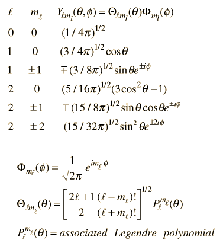
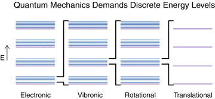
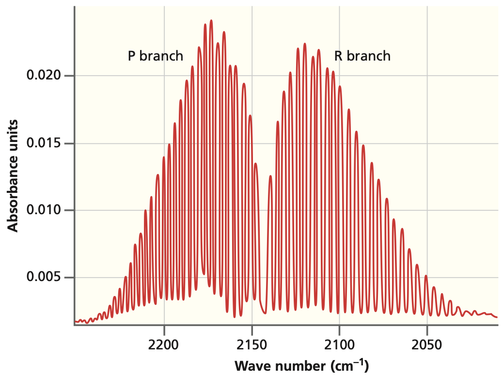
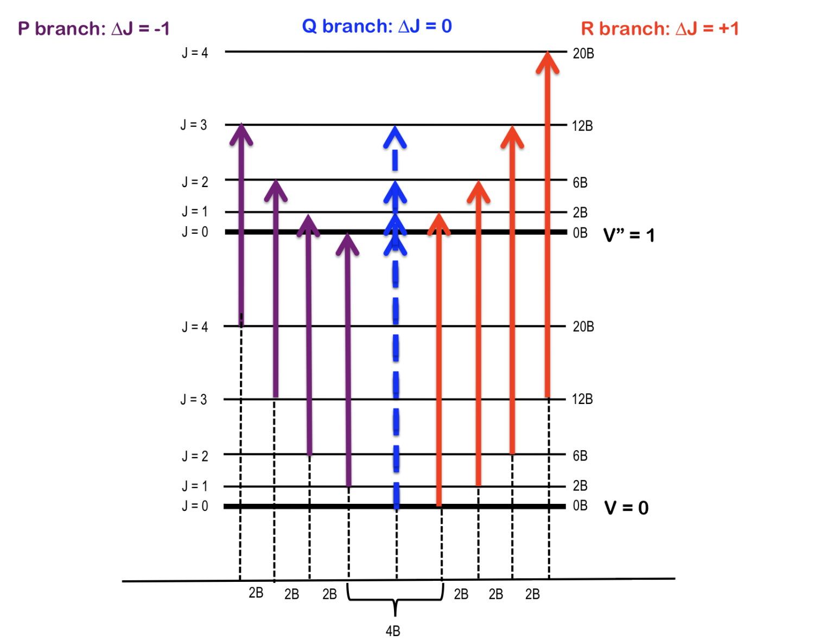

Chem 3240 · Lecture 4.5

::::
Eigenfunctions are the spherical harmonics \(Y(\theta,\phi)\): \[\hat{H}\,Y(\theta,\phi)=E_{J,m}\,Y(\theta,\phi)\]
\[E_J = \frac{\hbar^2}{2I}J(J+1) = B\,J(J+1)\]
Rotational constant (units of energy): \[B = \frac{h^2}{8\pi^2 I}\]
Each level is \((2J+1)\)-fold degenerate (the allowed \(M_J\))
For a diatomic: \[I = \mu r^2\]

The molecule must have a permanent dipole moment: \[\langle J' | \mu | J'' \rangle \neq 0\]
Only adjacent levels connect: \[\boxed{\Delta J = \pm 1}\]
Line positions (\(\Delta J = +1\)): \[\tilde{\nu}_J = 2\tilde{B}(J+1)\]
Take one more difference: \[\tilde{\nu}_{J+1} - \tilde{\nu}_J = 2\tilde{B}\]

Combine rotor and oscillator: \[\tilde{E}_{v,J} = \tilde{\omega}(v+\tfrac12) + \tilde{B}J(J+1)\]

Rotational energies \(E_J = B\,J(J+1)\) are \((2J+1)\)-fold degenerate. With \(\Delta J=\pm 1\) this gives evenly spaced microwave lines separated by \(2\tilde{B}\), and the spacing reveals the bond length through \(I=\mu r^2\).
Chem 3240 · Quantum Mechanics